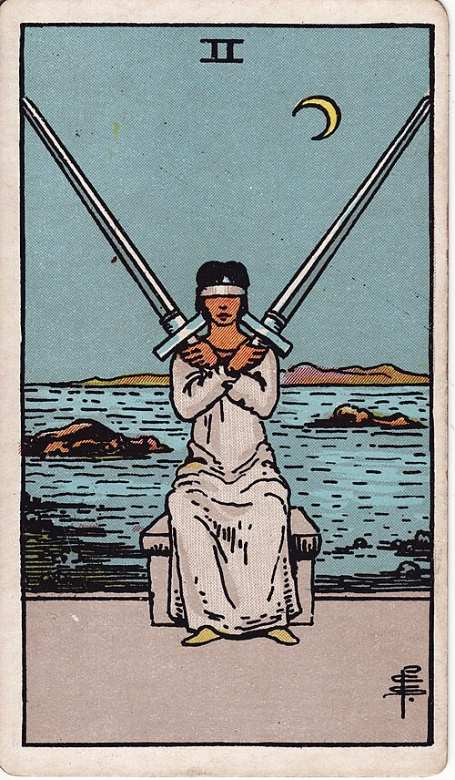

| Arcana | Minor |
| Suit | Swords |
| Element | Air |
| Attribution | Moon in Libra |
2 of Swords
Two of Swords
In shortA decision you are avoiding by not looking.
Upright
stalemateavoided decisionwilful blindnessuneasy truceimpasse
You are holding a decision perfectly still by refusing to look at it. Two options are balanced, and the balance survives only because you have not gathered the information that would tip it. It is a defensive position and it is exhausting. Something has to give.
Reversed
the blindfold offinformation arrivinga decision forcedrelease
The blindfold comes off. New information arrives, the deadlock breaks, or events decide for you. It is usually a relief even when the outcome is not what you wanted, because the holding was the harder part.
In the pictureShe sits blindfolded, arms crossed over her chest with two swords balanced perfectly. Behind her the sea is scattered with rocks — hazards she cannot see. A crescent moon: this is happening in the dark, and by feel.
The turn
Gather the one fact you have been avoiding. Then decide.
Reading with your own deck?
Sage records the cards you actually pull, writes the reading, keeps every one, and shows you what keeps returning across them. Free, private, no account.